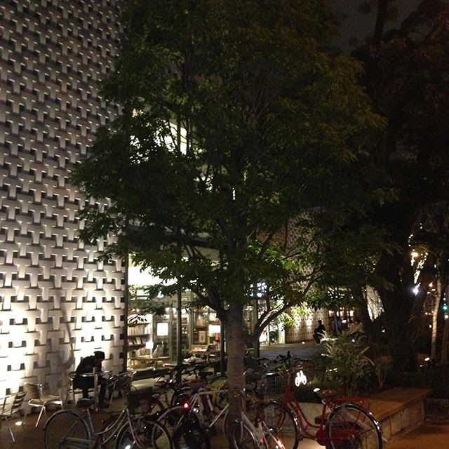
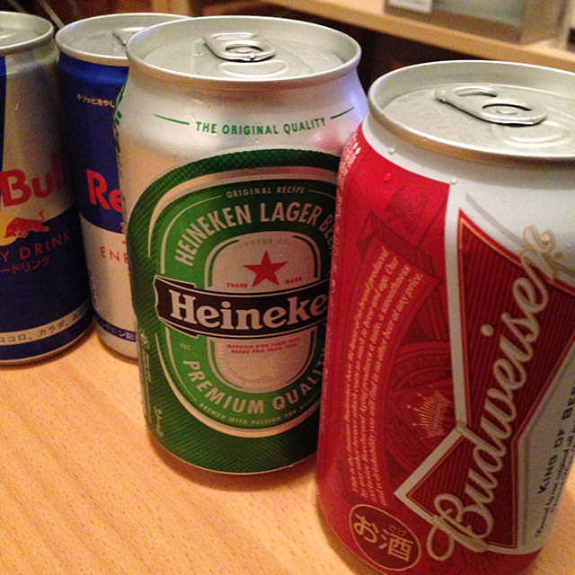
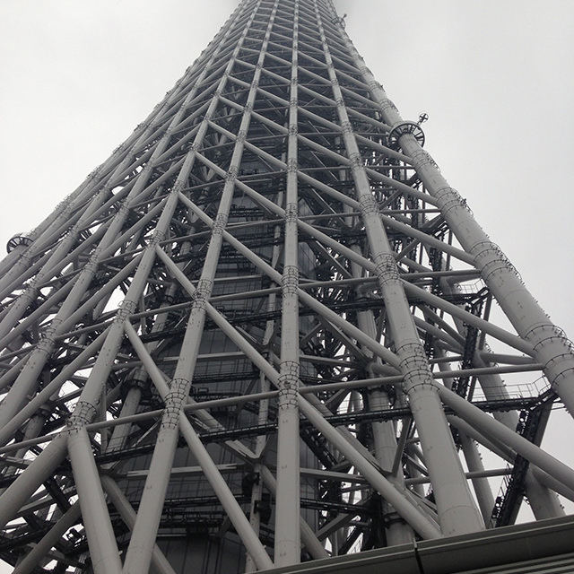
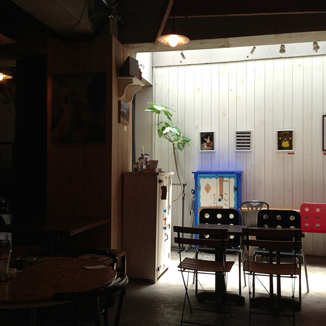
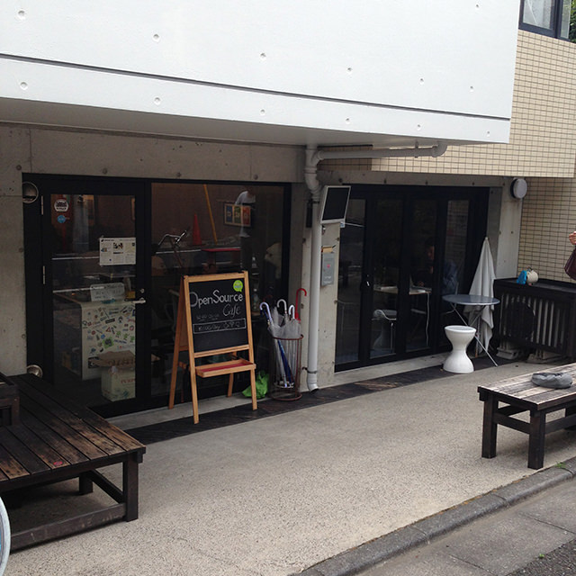
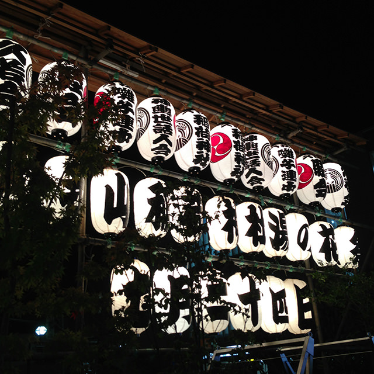
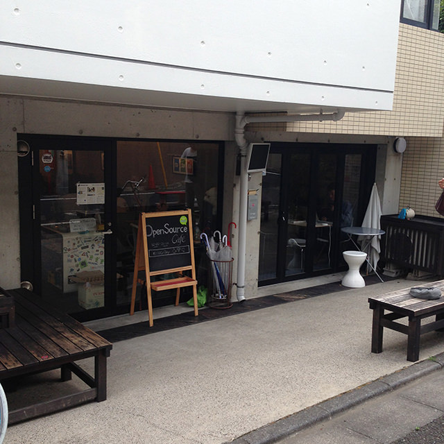
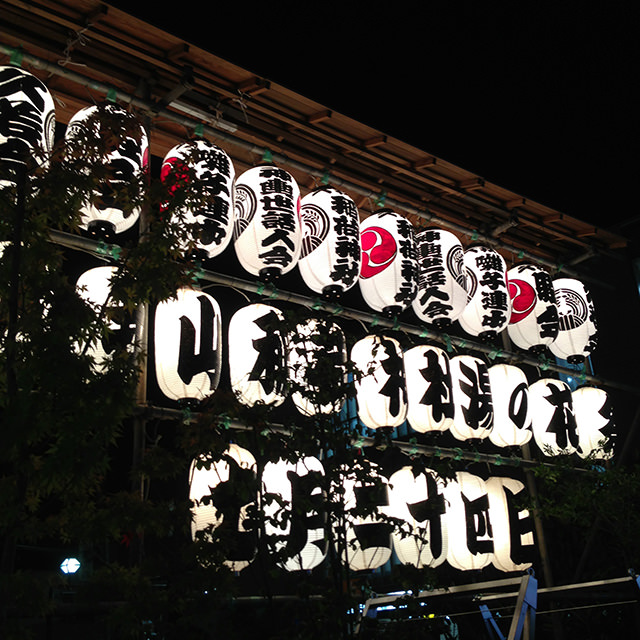
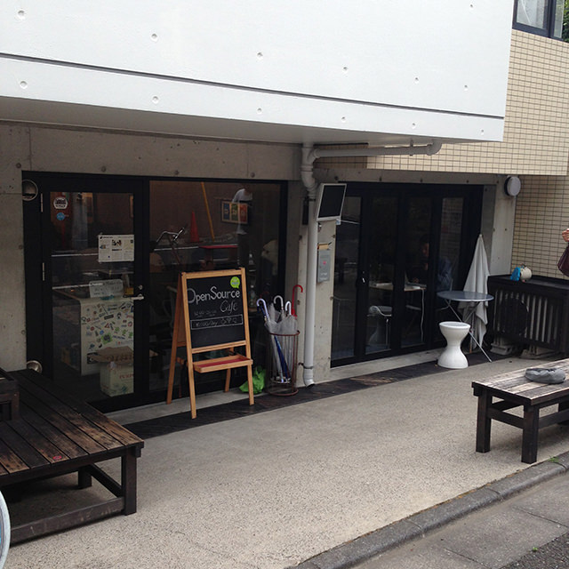
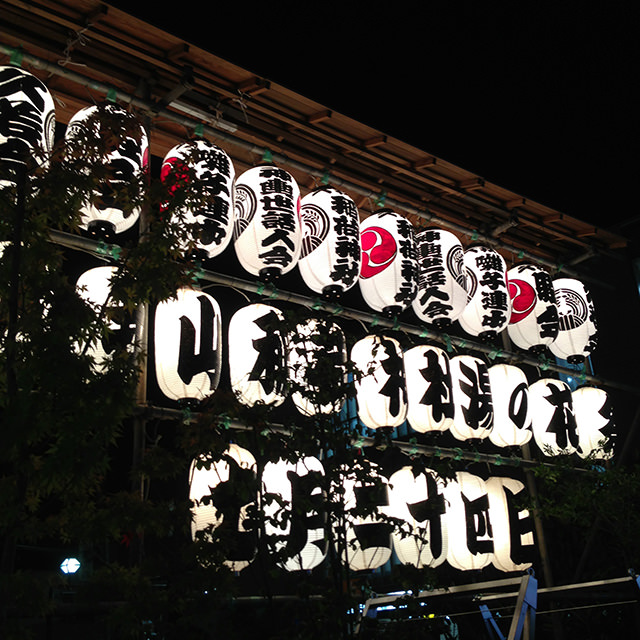

lazyload-image
HTMLImageElement extension for lazy loading.
Install
Install lazyload-image via npm or bower.
# via npm
$ npm install lazyload-image
# via bower
$ bower install lazyload-imageUsage
Load lazyload-image.js in your JavaScript.
import LazyloadImage from './lazyload-image.js';
customElements.define('lazyload-image', LazyloadImage, {
extends: 'img'
});Modify your <img> elements such as following.
<img is="lazyload-image" src="path/to/your/image.jpg" width="100" height="100">You can specify load offset.
<img is="lazyload-image" src="path/to/your/image.jpg" offset="200" width="100" height="100">Fallback
If browser does not support customElements.define(), Images will be loaded as usual.
Demo
Recommend you to open DevTools's Elements tab to see behavior of <lazyload-image>.




 




